材料 8個分
※粉量を変えると自動計算されます
生地
トッピング
型
作り方
生地
STEP 1
仕込み水を作る
ぬるま湯に砂糖とドライイーストを加え、よく混ぜ合わせます。夏場は湿度が高く生地がベタつきやすいため、今回は水150gと、冬場より5gほど水の量を減らして作っていきます。
ぬるま湯に砂糖とドライイーストを加え、よく混ぜ合わせます。夏場は湿度が高く生地がベタつきやすいため、今回は水150gと、冬場より5gほど水の量を減らして作っていきます。
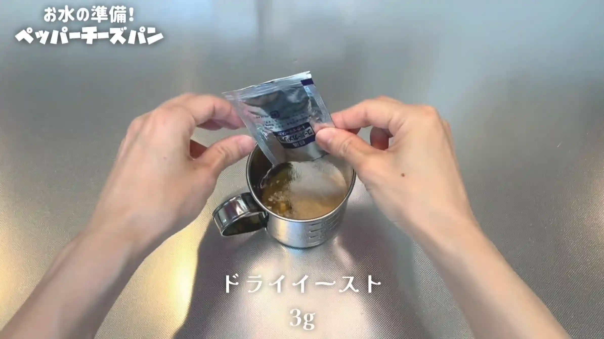
STEP 2
粉類を混ぜ、仕込み水を加えて混ぜる
強力粉と塩を混ぜ、仕込み水を加えてヘラで1分半ほど混ぜます。粉気がなくなり、ひとまとまりになればOKです。
強力粉と塩を混ぜ、仕込み水を加えてヘラで1分半ほど混ぜます。粉気がなくなり、ひとまとまりになればOKです。
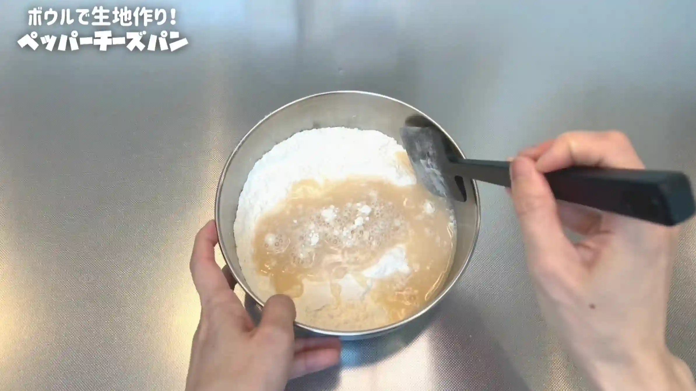
STEP 3
バターを加え、手で捏ねる（[動画 02:34]）
バターを加え、手で3分半ほど捏ねます。最初はバターが生地になじみにくくても、捏ねているうちに生地がまとまってきます。
バターを加え、手で3分半ほど捏ねます。最初はバターが生地になじみにくくても、捏ねているうちに生地がまとまってきます。
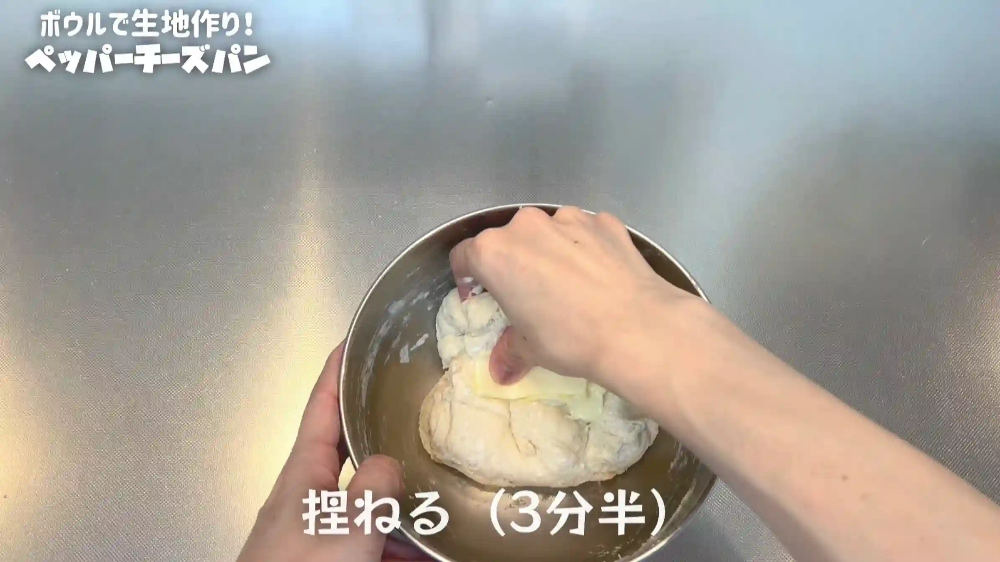
STEP 4
室温で15分おく
生地の表面を軽く整え、乾燥しないようにラップをして、室温で15分ほど生地を休ませます。ここで休ませることで、生地が少し落ち着き、次の工程で扱いやすくなります。
生地の表面を軽く整え、乾燥しないようにラップをして、室温で15分ほど生地を休ませます。ここで休ませることで、生地が少し落ち着き、次の工程で扱いやすくなります。
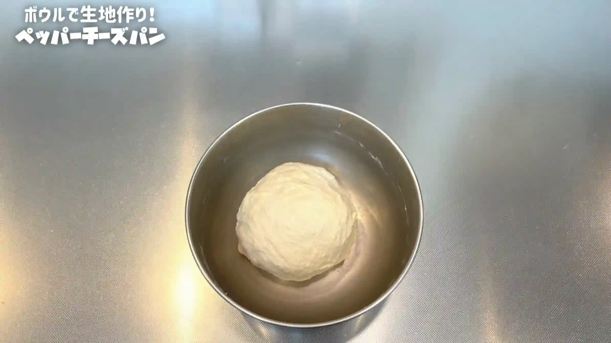
STEP 5
生地をボウルの中で叩く（[動画 03:38]）
生地をボウルの中で1分ほど叩きます。ボコボコとしていた生地の表面が、ツルッとなめらかになったら、次の工程へ進みます。
生地をボウルの中で1分ほど叩きます。ボコボコとしていた生地の表面が、ツルッとなめらかになったら、次の工程へ進みます。
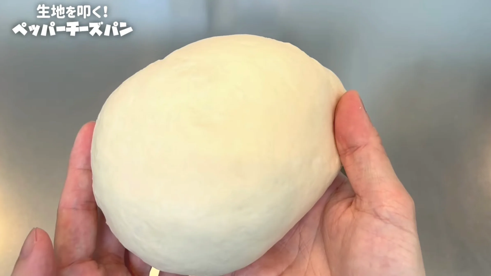
STEP 6
生地にピザチーズを混ぜる
ボウルの中で生地を広げ、ピザチーズを2回に分けて生地に混ぜ込んでいきます。この後丸めて成形するため、ここでは全体に軽く混ざればOKです。チーズの濃厚な味わいが加わって、とてもおいしい生地になります。
ボウルの中で生地を広げ、ピザチーズを2回に分けて生地に混ぜ込んでいきます。この後丸めて成形するため、ここでは全体に軽く混ざればOKです。チーズの濃厚な味わいが加わって、とてもおいしい生地になります。
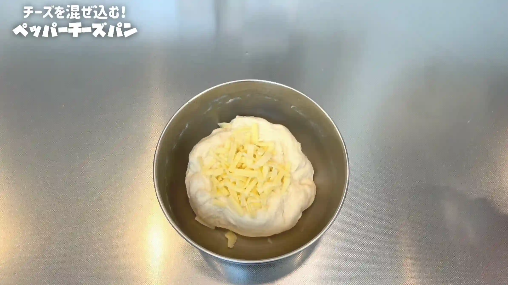
STEP 7
室温で2倍に膨らむまでおく
乾燥しないようにラップをして、室温で一次発酵させます。40分〜90分ほどを目安に、生地が元の約2倍に膨らんだら次の工程へ進みます。発酵時間は室温によって変わるため、生地の膨らみを確認してください。
乾燥しないようにラップをして、室温で一次発酵させます。40分〜90分ほどを目安に、生地が元の約2倍に膨らんだら次の工程へ進みます。発酵時間は室温によって変わるため、生地の膨らみを確認してください。
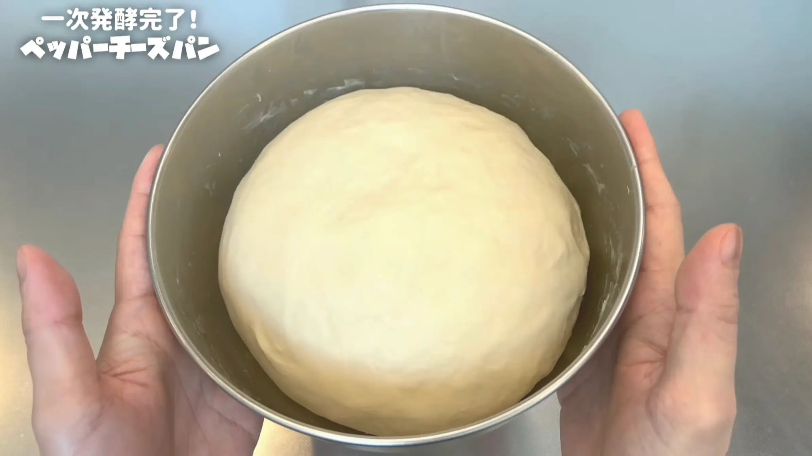
STEP 8
生地を分割して丸め、室温で10分おく
生地を分割して丸めます。このとき、チーズが生地からはみ出してきても、気にせずそのまま丸めていきます。乾燥しないようにラップをして、室温で10分ほど休ませます。
生地を分割して丸めます。このとき、チーズが生地からはみ出してきても、気にせずそのまま丸めていきます。乾燥しないようにラップをして、室温で10分ほど休ませます。
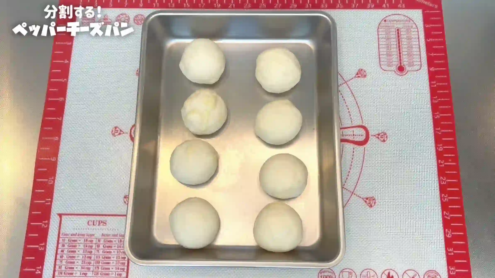
STEP 9
生地を丸め直し、型に入れる（型に入れない場合は天板にのせる）
生地をもう一度丸め直し、型に入れます。型を使わない場合は、そのまま天板にのせてください。チーズが多少はみ出していても、そのまま成形して大丈夫です。はみ出たチーズは、焼いたときにカリカリになっておいしく仕上がります。
生地をもう一度丸め直し、型に入れます。型を使わない場合は、そのまま天板にのせてください。チーズが多少はみ出していても、そのまま成形して大丈夫です。はみ出たチーズは、焼いたときにカリカリになっておいしく仕上がります。
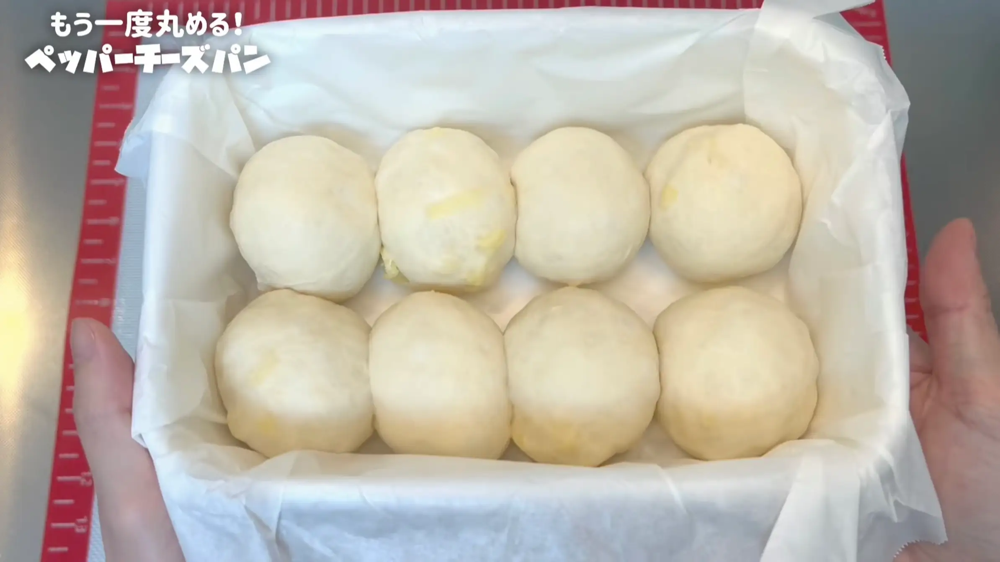
STEP 10
室温で生地がふっくらするまでおく
乾燥しないようにラップをして、室温で二次発酵させます。30分〜50分ほどを目安に、生地がふっくらと膨らんできたら次の工程へ進みます。
乾燥しないようにラップをして、室温で二次発酵させます。30分〜50分ほどを目安に、生地がふっくらと膨らんできたら次の工程へ進みます。
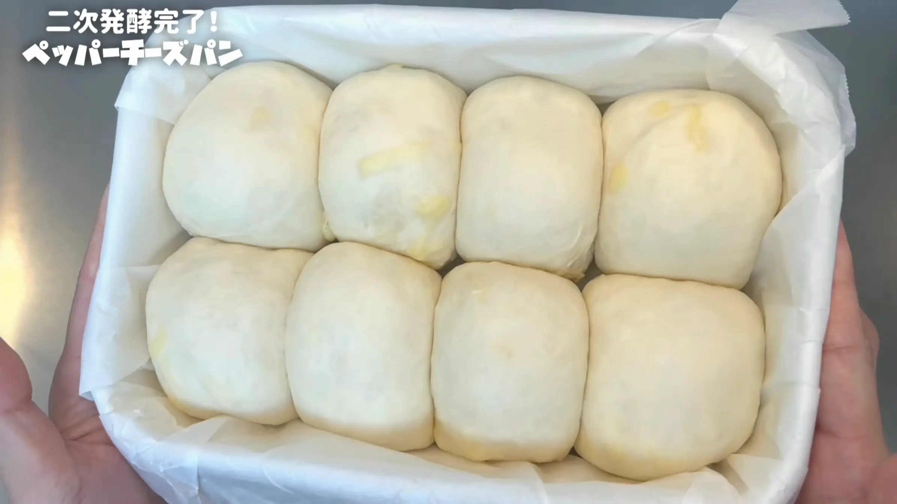
STEP 11
オーブンを210℃に予熱する
焼成前にオーブンを210℃に予熱しておきます。型を使わず天板で焼く場合は180℃に設定してください。
焼成前にオーブンを210℃に予熱しておきます。型を使わず天板で焼く場合は180℃に設定してください。
STEP 12
トッピングする
二次発酵が終わった生地の表面に、好みでオリーブオイルを薄く塗ります。粉チーズをたっぷりかけ、最後に黒胡椒もしっかり振ります。チーズの濃厚な味に黒胡椒のスパイス感が加わり、味がキリッと引き締まります。
二次発酵が終わった生地の表面に、好みでオリーブオイルを薄く塗ります。粉チーズをたっぷりかけ、最後に黒胡椒もしっかり振ります。チーズの濃厚な味に黒胡椒のスパイス感が加わり、味がキリッと引き締まります。
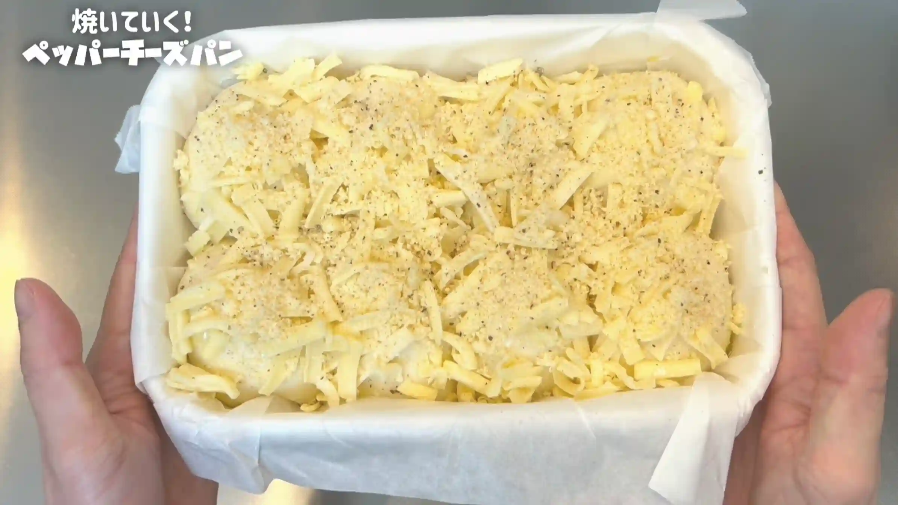
STEP 13
オーブン210℃で30分焼く（型に入れない場合は180℃20分くらい焼く）
型に入れた場合は210℃で30分、天板で焼く場合は180℃で20分ほどを目安に焼きます。表面のチーズは焦げやすいため、焼き色がついてきたら早めにアルミホイルをかぶせます。焼き時間は目安とし、ご家庭のオーブンに合わせて調整してください。
型に入れた場合は210℃で30分、天板で焼く場合は180℃で20分ほどを目安に焼きます。表面のチーズは焦げやすいため、焼き色がついてきたら早めにアルミホイルをかぶせます。焼き時間は目安とし、ご家庭のオーブンに合わせて調整してください。
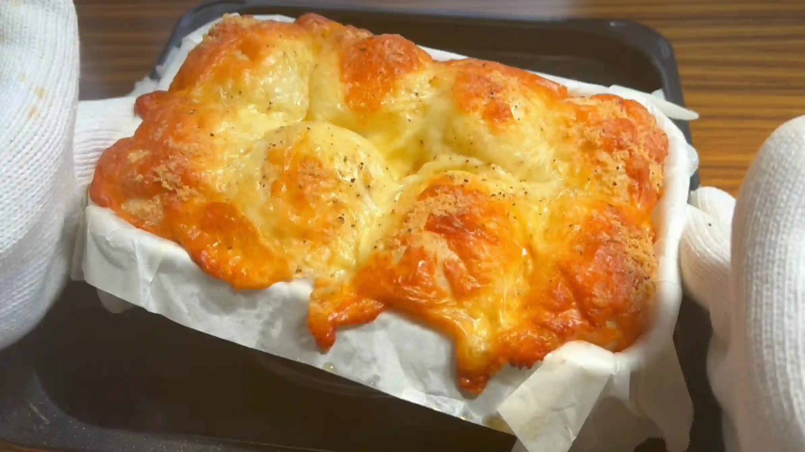
動画でチェック
おいしく作るためのワンポイントコラム
こんにちは、おなおドーナツです！
今回は、夏バテ気味のときにもパクパク食べられる、ボリューム満点の『ペッパーチーズパン』を作っていきます！生地の中にも外にもチーズをたっぷり使った、お惣菜感がたまらないレシピです。おいしく仕上げるための大切なポイントを3つにまとめました。
① 夏場の水分調整
夏場は湿度が高いため、生地がダレてベタつきやすくなります。そのため、冬場よりもお水の量を少しだけ減らすのがコツ。こうすることで、生地のベタつきを抑えられて、とても扱いやすい硬さになります。
② 成形のコツ
分割して丸める際、どうしても生地から具材のチーズが顔を出してしまいますが、ここは気にせずとにかく丸めるのがコツ。はみ出たチーズは焼いたときにカリカリになってそれもまた美味しいので、難しく考えず、形がなんとなく丸くなっていればOKです！
③ 仕上げの黒コショウ
二次発酵が終わり、トッピングのチーズをたっぷり乗せたら、最後に黒コショウをしっかり振るのがポイントです。濃厚なチーズのコクにキリッとしたスパイス感が加わることで、全体の味がグッと引き締まり、夏でも一気に食欲をそそる味わいに変身します。
焼き始めると上のチーズが焦げやすいので、焼き色がついたら早めにアルミホイルをかけると綺麗に焼き上がりますよ。型を使わずに天板で焼く場合は、温度を180℃くらいに下げると焦がさずに焼けるのでおすすめです。それでは、おうちパン作りの時間を一緒に満喫しましょう！
今回は、夏バテ気味のときにもパクパク食べられる、ボリューム満点の『ペッパーチーズパン』を作っていきます！生地の中にも外にもチーズをたっぷり使った、お惣菜感がたまらないレシピです。おいしく仕上げるための大切なポイントを3つにまとめました。
① 夏場の水分調整
夏場は湿度が高いため、生地がダレてベタつきやすくなります。そのため、冬場よりもお水の量を少しだけ減らすのがコツ。こうすることで、生地のベタつきを抑えられて、とても扱いやすい硬さになります。
② 成形のコツ
分割して丸める際、どうしても生地から具材のチーズが顔を出してしまいますが、ここは気にせずとにかく丸めるのがコツ。はみ出たチーズは焼いたときにカリカリになってそれもまた美味しいので、難しく考えず、形がなんとなく丸くなっていればOKです！
③ 仕上げの黒コショウ
二次発酵が終わり、トッピングのチーズをたっぷり乗せたら、最後に黒コショウをしっかり振るのがポイントです。濃厚なチーズのコクにキリッとしたスパイス感が加わることで、全体の味がグッと引き締まり、夏でも一気に食欲をそそる味わいに変身します。
焼き始めると上のチーズが焦げやすいので、焼き色がついたら早めにアルミホイルをかけると綺麗に焼き上がりますよ。型を使わずに天板で焼く場合は、温度を180℃くらいに下げると焦がさずに焼けるのでおすすめです。それでは、おうちパン作りの時間を一緒に満喫しましょう！


今回は、夏の暑さも吹き飛ぶスパイスの効いた「ペッパーチーズパン」のご紹介です！生地にもチーズを混ぜ込み、そして上からもたっぷりのチーズをかけた、ダブルチーズのお惣菜パンです！コラムでは「夏場の水分調整」「成形のコツ」「仕上げの黒コショウ」の3つのコツをご紹介します。